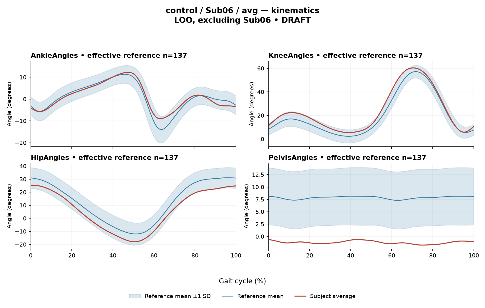

rater2 / Report 78 of 105 / Review spreadsheet row 79
R320DCD2D7ECF50B9
Case: control_Sub06_avg
Read this report independently. Record judgments in the workbook. Browser pages do not save ratings.
Report: exact saved text
# Gait Report Interpretation — Sub06 **Version:** limited-evidence-v3.1-candidate **Scope:** Research interpretation of supplied quantitative summary only. Not a diagnosis, not a treatment recommendation. --- ## 1. Objective Findings **Participant and group.** Sub06 is recorded in the **control (healthy) group**. No affected/paretic side applies, and the paretic/non-paretic step-length index used in this task is therefore **not applicable** — this is a definitional non-applicability, not a missing or failed measurement, and it does not imply that a general left/right step-length symmetry measure could not be defined in other analyses. Membership in the healthy group is a cohort label. It does not by itself establish normal physiology, normal motor control, or absence of any condition; likewise, any numerical difference from the empirical reference below does not establish disease. The same interpretive limits applied to clinical subjects apply here. **Data supplied.** Sagittal-plane kinematics for four channels (ankle, knee, hip, pelvis) with per-joint Gait Variable Scores and ROM; ensemble-averaged EMG envelopes for seven muscles (GAS, RF, VL, BF, ST, TA, ERS) with algorithm-detected above-threshold intervals, coverage, peak normalized amplitude and max |z| location; two co-contraction indices; and a composite GPS-like score. **Data not supplied in this input.** - **Gait speed and cadence: not provided.** Because speed is absent, I cannot verify whether this participant's self-selected speed falls inside the reference cohort's 0.80–1.79 m/s span, and I cannot assess speed comparability of any reference comparison below. - **Step length symmetry index:** not applicable (see above). - **Gait events beyond the cycle-defining boundary:** no individual toe-off and no intermediate event or phase boundary are supplied here. All timing below is expressed as **percent of the analysis cycle**. - **Not supplied in this input** (which is not the same as documented absent from the source release): age, sex, stride-level variability, raw-signal quality checks, expert plots, muscle-specific matched timing norms. - **Not applicable to this participant:** time post-stroke, stroke clinical scores, non-paretic-side designation. - **Outside the measurement entirely:** coronal and transverse plane kinematics. **Cycle definition.** Per the release dictionary, contributing strides run from initial contact of the stride-defining limb (0%) to its next initial contact (100%); the healthy Excel release averages left- and right-side strides, so this is an **initial-contact-aligned pooled cycle**, not one named limb's observed event trace. This anchor is documentary; healthy MAT pooling and side-specific denominators were not numerically reverified by the stroke audit. A 0% or 100% boundary value is the analysis-window edge. --- ## 2. EMG Envelope and Threshold Findings **How to read these numbers.** All values are properties of an **ensemble-averaged envelope** per muscle, normalized to a shared maximum across available strides (not per-stride rescaling), then thresholded at **20% of that curve's own peak** with a **3%-of-cycle minimum retained duration**. Intervals are therefore detection results under that rule, not physiological onset, offset, contraction duration, or evidence of inactivity outside the intervals. Amplitudes are **relative envelope values** — they are not force, strength, or neural drive, and muscles must not be ranked as stronger or weaker from them. An averaged curve cannot show stride-to-stride variability, and the mean-level pattern should not be assumed to recur identically in every individual stride. | Muscle | Retained interval(s) | Coverage | Peak norm. amp. | Max abs. z (direction, location) | |---|---|---|---|---| | GAS | 14%–51% | 37% | 0.61 | 1.5 above reference, at 45% | | RF | 61%–65%; 90%–42% (wraps) | 56% | 0.60 | 1.8 below reference, at 82% | | VL | 88%–44% (wraps) | 56% | 0.67 | 2.4 above reference, at 31% | | BF | 80%–9% (wraps) | 30% | 0.60 | 1.4 above reference, at 1% | | ST | 81%–20% (wraps) | 39% | 0.77 | 2.1 above reference, at 91% | | TA | 56%–79%; 90%–25% (wraps) | 58% | 0.78 | 2.3 above reference, at 12% | | ERS | 66%–55% (wraps) | 90% | 0.67 | 4.1 above reference, at 36% | **Boundary continuity.** For RF, VL, BF, ST, TA and ERS the averaged envelope remains above its own 20% threshold **across the 100%→0% cycle boundary** (i.e., across initial contact of contributing strides, per the documentary anchor). This is continuity of the mean envelope at that boundary, not proof of continuous contraction, and not a phase assignment. GAS is the only muscle whose retained interval lies wholly within the cycle without wrapping (14%–51%). **Segmentation notes.** RF and TA each yielded two separate retained intervals, so at the mean-envelope level there are regions between them that did not satisfy the threshold-plus-duration rule (RF: roughly 42%–61% and 65%–90%; TA: roughly 25%–56% and 79%–90%). ERS shows the highest coverage at 90%, with a single wrapping interval; the complementary region (roughly 55%–66%) was not retained. I am describing retained-interval structure only — I cannot state from these summaries whether any given non-retained region reflects sub-threshold envelope amplitude or failure of the duration criterion in every case, and none of this establishes that the muscle was inactive there. **Anatomical naming versus function.** The recorded muscles include ankle dorsiflexor (TA) and plantarflexor (GAS), knee extensors (RF, VL), knee flexors/hip extensors (BF, ST) and erector spinae (ERS). Naming these actions is permissible; mapping any interval to clearance, push-off, weight acceptance, loading response, mid-stance, pre-swing, or to a stance/swing split is **not** supported, because no toe-off or intermediate event is supplied and a conventional 60% split must not be substituted. For the same reason, no timing here can be called normal, early, delayed or prolonged. **Max |z| interpretation.** Each max |z| is the **largest standardized difference across 1001 phase points** relative to the healthy-cohort phase-specific mean/SD — an extreme-value statistic, not a single-observation z-score, and not necessarily the location of peak envelope amplitude or of any gait event. "Above/below reference" means relative to the **phase-specific reference mean at that location**, not relative to a healthy percentile limit. The conventional 2-SD rule does not apply: in this dataset all 109 healthy controls exceed |z| = 2 on at least one muscle, and per-muscle healthy 95th percentiles for this statistic run 3.65 (ERS) to 4.61 (TA), higher still under leave-one-out. On that basis, VL (2.4), TA (2.3) and ST (2.1) sit well inside the corresponding per-muscle healthy spread. ERS at 4.1 is numerically above the pooled ERS 95th-percentile calibration value of 3.65; however, those percentiles are **pooled calibration figures, not matched leave-one-out normal limits** for this participant, and the leave-one-out values are stated to be higher. This comparison therefore flags a relatively large standardized difference in ERS and nothing more — it does not establish abnormality, pathology, or a disease effect. **Co-contraction indices (whole-cycle).** CCI is the Falconer–Winter index computed on the **full continuous normalized envelopes** (2 × common area / summed areas) over the whole cycle. It is not simultaneous activation time, not muscular force, and not a phase-specific result; it can be non-zero even where detected bursts of the pair do not overlap, because sub-threshold envelope contributes. - **TA vs GAS = 0.34** — inside the healthy interval 0.24–0.59, below the healthy median of 0.39. - **RF vs BF = 0.58** — inside the healthy interval 0.48–0.83, below the healthy median of 0.68, and closer to the lower endpoint than to the median. Falling inside these intervals does not establish physiologically normal co-activation or normal muscle function; falling outside would not establish pathological co-activation, stiffness, impaired control or any diagnosis. These values are specific to this normalization and envelope pipeline and must not be compared against thresholds or values from other studies or algorithms. --- ## 3. Kinematic and Reference Comparisons **Reference used for this subject:** 137 healthy subjects, **leave-one-out (Sub06 excluded)**, 1001 phase points, source `main_cohort_excel`. This is an appropriate self-exclusion design for a control participant. It remains a pooled reference across both body sides and all ages, and it is not age- or speed-matched; with this subject's speed not provided, speed comparability cannot be checked at all. | Sagittal channel | ROM (deg) | Gait Variable Score | |---|---|---| | Ankle | 21.3 | 1.78 | | Knee | 54.8 | 4.32 | | Hip | 43.3 | 6.01 | | Pelvis | 1.1 | 9.05 | **Composite (GPS-like) = 5.91**, the RMS of the four sagittal GVS values above. This is explicitly **not** the validated 9-variable GPS. Against the supplied healthy composite reference (median 5.1, 95th percentile 10.7), 5.91 is modestly above the median and well below the 95th percentile. **What GVS and the composite can and cannot show.** Both are **summary magnitudes of difference** from the stated reference across the cycle. Neither localizes the difference to a phase, nor indicates waveform direction (e.g., more flexed versus more extended). The largest per-joint difference is at the pelvis (9.05), with hip next (6.01); ankle shows the smallest (1.78). I cannot say from these numbers where in the cycle or in which direction those differences occur. **Pelvis ROM.** Sagittal pelvic ROM of 1.1 deg is a small excursion in absolute terms, but **ROM alone does not establish a clinical restriction** in the absence of an appropriate matched comparison, and no pelvic ROM reference value is supplied here. Sagittal pelvic angle is also the channel most sensitive to marker placement and model definition; note additionally that the co-existence of a small ROM with the largest GVS is arithmetically possible through an offset or waveform-shape difference, which these summaries cannot distinguish. **Comparability limit (applies to this control as to any subject).** The reference is pooled across sides and ages and is not matched on age or walking speed; speed is not even available here. Any deviation described above is a **difference from this specific empirical reference under this specific pipeline** and cannot be attributed to a disease effect, an impairment, or a clinical diagnosis. Conversely, agreement with the reference does not certify normal function. --- ## 4. Questions for Further Clinical Assessment These are open questions raised by the supplied summary. They do not presuppose that any mechanism or measurement issue has been observed, and no treatment is suggested. 1. **Speed and cadence:** Can the participant's self-selected gait speed and cadence be retrieved from the release, so that comparability with the 0.80–1.79 m/s reference span can be evaluated rather than left unverifiable? 2. **Pelvic channel:** Is there source information (marker placement records, model definition, raw pelvic waveform) that would allow the small sagittal pelvic ROM (1.1 deg) and the largest per-joint GVS (9.05) to be examined together — i.e., whether an offset, a shape difference, or a modelling/marker factor accounts for that combination? 3. **ERS finding:** Would review of the ERS envelope waveform and its leave-one-out per-muscle reference distribution clarify whether the max |z| of 4.1 at 36% and the 90% coverage reflect envelope shape, normalization scaling, or reference-cohort spread? 4. **Gait events:** Are individual toe-off and any intermediate event boundaries available in the release for this participant, which would permit event-anchored rather than percent-of-cycle description of the EMG intervals? 5. **Stride-level data:** Are individual stride envelopes (pre-averaging) accessible, to assess consistency of the boundary-crossing continuity seen in six muscles and to characterize variability, which an averaged curve cannot show? 6. **Signal quality:** Are raw-signal quality checks, electrode placement notes, or artifact screening records available for the EMG channels, since none were supplied with this summary? 7. **Additional planes:** Would coronal/transverse kinematics, if collected, be available to complement the sagittal-only picture? 8. **Demographics:** Can age and sex be retrieved so that a more closely matched subset of the reference cohort could be considered for future comparisons?
Requirements for this report
Fill the corresponding Coverage rows in the workbook. G03 is included once. These are the approved requirements, not prefilled judgments.
| Excel row | ID | Required content | Components / optional content |
|---|---|---|---|
| 406 | R182 | Identify pelvis AND hip as the principal sagittal GVS differences AND distinguish pelvic GVS difference from the small measured pelvic excursion (ROM 1.1 degrees). Exact GVS values are optional; identify the findings as reference-relative sagittal summary differences. | AND: pelvis AND hip AND contrast between pelvic GVS and small excursion (ROM 1.1). No offset direction or restriction. Exact values optional. |
| 407 | R183 | Describe ERS envelope above its phase-specific reference mean at approximately 36% of the analysis cycle (displayed max |z| 4.1). Within each route, muscle identity AND mean-relative direction AND approximate cycle location are required. Exact max-|z| repetition is optional. | Required for each route: muscle identity AND direction relative to the phase-specific reference mean AND approximate cycle location. Optional: exact max |z| value, comparison with the supplied endpoint span (descriptive only). Prohibited: percentile classification, gait phase, physiological onset, severity. Healthy provenance does not make the finding normal, and the finding does not make the participant abnormal. |
| 408 | A010 | Identify the participant as a healthy control AND state that the leave-one-out comparison excludes this participant. IF speed is discussed, state it was not supplied; IF cadence is discussed, state it was not supplied; IF the task-specific paretic/non-paretic step-length index is discussed, state it is not applicable. Each branch is triggered only by that domain. Exact reference count 137 is optional. | AND: healthy-control provenance AND self-exclusion from the leave-one-out reference. Conditional, per domain: speed not supplied; cadence not supplied; task-specific paretic/non-paretic index not applicable. Optional: count 137. G03 applies separately once. A correct core with one missing AND component is partial. |
| 409 | G03 | Express a meaningful limitation of reference comparability AND why the comparison cannot establish disease effects or clinical diagnosis; for controls it cannot establish disease or overall normality. One statement may also support a case requirement. | AND: comparability and inference limitations |
Exact model input: system instruction
Draft a research gait-report interpretation for a physical therapist or physiatrist using only the supplied quantitative summary. This is a limited-evidence interpretation task, not diagnosis or treatment selection. Rules: - Describe the participant's actual group and side, available findings, and missing channels accurately. Healthy-group membership does not prove normal physiology; deviations from an empirical reference do not by themselves establish disease. - Treat detected EMG intervals and coverage as properties of an averaged envelope under the stated threshold and duration rule. Do not convert them into physiological onset, offset, duration, continuous contraction, or inactivity outside the intervals. You may describe reported coverage, retained intervals and boundary continuity at the mean-envelope level. Do not infer the same pattern in every individual stride. Say no below-threshold segment only when the supplied evidence establishes that; a rounded coverage value or no retained interval alone does not establish it. - Individual toe-off and matched muscle-specific timing references are not supplied in this task. Use percentages of the analysis cycle. When the input explicitly identifies an initial-contact boundary, you may name that boundary or describe numerical proximity to it. Do not assign stance/swing, loading response, pre-swing, mid-stance or another event to a percentage, or substitute a conventional 60% split. Anatomical muscle actions may be named, but do not map an interval to a gait-phase function such as clearance, push-off or weight acceptance. Do not characterize timing as normal, early, delayed or prolonged without the required evidence. - Respect the supplied normalization method. Relative envelope amplitude is not strength or force, and average curves do not establish stride-to-stride variability. - Report CCI as a whole-cycle overlap index of normalized EMG envelopes. You may compare it with the supplied empirical interval or a supplied median, including proximity to an endpoint. Do not invent an unavailable median. Being within that interval does not establish physiologically normal co-activation or normal muscle function; being outside it does not establish pathological co-activation, stiffness, impaired control or a diagnosis. CCI is not simultaneous activation time, muscular force or a phase-specific result. It depends on normalization and envelope methods; do not transfer values or thresholds from other studies or algorithms. - Describe GVS and GPS-like as summary differences from the stated reference. Neither localizes waveform direction or phase; ROM alone does not establish a clinical restriction without an appropriate comparison. Do not treat pooled calibration percentiles as matched leave-one-out normal limits. - Where using a reference comparison, convey both limited comparability and the inability to establish a disease effect or clinical diagnosis from that comparison. One clear explanation per report is enough; age and speed need not be recited as separate checklist words. A speed inside an overall range does not prove that an appropriate matched reference exists. Apply these limits to controls as well. - The location of maximum |z| is the largest standardized difference from the reference, not necessarily the time of peak envelope amplitude or a gait event. Above/below reference in an EMG row means relative to the phase-specific reference mean at that location, not relative to a healthy percentile limit. - Preserve numerical direction and the displayed precision. Do not invent values, clinical severity grades, statistical significance, or unavailable reference values. Descriptive comparisons with supplied values remain allowed. Near-boundary rounded values do not justify classifying hidden unrounded values. - Clinical follow-up questions may ask whether a mechanism or measurement issue exists; do not presuppose it has already been observed. Do not recommend treatment. If EMG is unavailable, section 2 may simply state that envelope timing, amplitude and CCI cannot be assessed. Reference-only plots do not provide patient EMG. Use exactly these four sections: 1. Objective Findings 2. EMG Envelope and Threshold Findings 3. Kinematic and Reference Comparisons 4. Questions for Further Clinical Assessment
Exact model input: case summary
Candidate interpretation version: limited-evidence-v3.1-candidate
Draft the four-section report using only this subject's supplied evidence.
Metric definitions (read before interpreting any number below):
- All joint angles and ROM values are SAGITTAL PLANE only. Coronal/transverse data are not included.
- The released EMG curves are ensemble-averaged envelopes. For each participant and recorded muscle, normalization uses a shared maximum across the available strides before averaging; individual strides are not independently rescaled to their own peaks. This pipeline uses the released mean curves without further amplitude normalization. For healthy controls, the normalization and left/right stride pooling account comes from the release documentation. Healthy MAT aggregation and side-specific denominators were not numerically verified by the stroke audit. Amplitudes are relative envelope values, not absolute neural activation, force, or strength. Do not rank muscles as stronger or weaker from these amplitudes, or infer stride-to-stride variability from an average curve.
- Above-threshold intervals are the regions where the averaged envelope exceeds 20% of that curve's own peak, minimum retained interval 3% of the cycle (by sample count). An interval written as (X%-Y%) with X > Y wraps across the 100%->0% cycle boundary (envelope remains above threshold across the cycle-defining event). An onset of 0% is the analysis-window boundary, not necessarily a physiological onset. "No interval detected" means no region met the threshold + duration criteria; it does NOT mean the muscle is inactive or non-functional.
- CCI is the Falconer-Winter co-contraction index computed on the full continuous envelopes (2*common area / summed areas), so it can be non-zero even when the DETECTED burst intervals of the pair do not overlap (sub-threshold activity contributes).
- The composite kinematic deviation score is the RMS of the per-joint Gait Variable Scores over the sagittal channels provided ("GPS-like", not the validated 9-variable GPS).
- The paretic/non-paretic step-length index used in this task is not applicable to controls. This does not imply that a general left/right step-length symmetry measure cannot be defined.
- "Max |z| deviation" is the LARGEST absolute z-score across all 1001 phase points of the cycle, comparing this curve to the healthy-cohort mean/SD at each phase. This is an extreme-value statistic, NOT a single-observation z-score: in this dataset every one of 109 healthy controls exceeds |z| = 2 on at least one muscle, and per-muscle healthy 95th percentiles for this statistic run 3.65 (ERS) to 4.61 (TA) -- higher still under leave-one-out. Do not label a value abnormal by the conventional 2-SD rule; use the healthy reference range given per muscle where provided.
- Healthy-cohort CCI reference (this dataset): RF-vs-BF median 0.68 (2.5th-97.5th pct 0.48-0.83); TA-vs-GAS median 0.39 (0.24-0.59). Composite score reference: median 5.1, 95th percentile 10.7.
- COHORT BACKGROUND (calibration context, not necessarily the exact reference used for this subject -- the actual reference composition is stated in a dedicated line with the subject data below): the full healthy cohort is 138 subjects for kinematics, effective n = 106-109 per muscle for EMG (29 controls have no usable EMG; completeness varies by age), pooling both body sides and all ages; it is not age- or speed-matched to this subject. A leave-one-out run uses one subject fewer than these counts.
- SPEED SUPPORT LIMIT (applies to most stroke subjects in this dataset): the healthy reference cohort's self-selected walking speeds span 0.80-1.79 m/s. If this subject's gait speed is below 0.80 m/s, NO speed-matched healthy reference exists in this dataset -- 41 of the 50 stroke subjects are below that floor. Deviations from the reference then conflate slow-walking effects with stroke-specific control changes, and the two cannot be separated from these data. Describe deviations from the reference as such; do not attribute them wholly to stroke pathology.
- Additional source fields are outside this input. Age, sex and gait events may be available in the release; time post-stroke, stroke clinical scores and a non-paretic-side designation apply only to the stroke cohort, as applicable. Do not claim every listed field exists for every participant. Distinguish not supplied, not applicable and documented absent recordings.
The release dictionary defines contributing strides from initial contact of the stride-defining limb (0%) to its next initial contact (100%). The healthy Excel release averages left- and right-side strides, so this is an initial-contact-aligned pooled cycle, not one named limb's observed event trace. This event anchor is documentary; healthy MAT pooling was not numerically reverified. The boundary may be called initial contact of contributing strides. No intermediate event or phase boundary is supplied.
Model-visible information boundary: the summary contains mean-curve metrics and algorithm-detected intervals, not individual toe-off, matched normal muscle timing, stride-level variability, raw-signal quality checks, or expert plots. Information not supplied here must not be described as absent from the source dataset. Gait-cycle percentages alone do not identify gait phases.
Subject: Sub06 (group: control, affected side: N/A)
Gait speed: not provided
Cadence: not provided
Step length symmetry index: not applicable (this task's paretic/non-paretic index; control has no paretic side)
Composite kinematic deviation score (GPS-like): 5.91
Deviation reference actually used for this subject: 137 healthy subjects (leave-one-out, excluding Sub06), 1001 phase points, source: main_cohort_excel.
EMG envelope findings:
- GAS: above-threshold interval(s) 14%-51%, 37% of cycle above threshold, peak normalized amplitude 0.61, max |z| vs healthy reference: 1.5 (above reference, at 45% of cycle)
- RF: above-threshold interval(s) 61%-65%; 90%-42% (wraps cycle boundary), 56% of cycle above threshold, above threshold across cycle boundary, peak normalized amplitude 0.60, max |z| vs healthy reference: 1.8 (below reference, at 82% of cycle)
- VL: above-threshold interval(s) 88%-44% (wraps cycle boundary), 56% of cycle above threshold, above threshold across cycle boundary, peak normalized amplitude 0.67, max |z| vs healthy reference: 2.4 (above reference, at 31% of cycle)
- BF: above-threshold interval(s) 80%-9% (wraps cycle boundary), 30% of cycle above threshold, above threshold across cycle boundary, peak normalized amplitude 0.60, max |z| vs healthy reference: 1.4 (above reference, at 1% of cycle)
- ST: above-threshold interval(s) 81%-20% (wraps cycle boundary), 39% of cycle above threshold, above threshold across cycle boundary, peak normalized amplitude 0.77, max |z| vs healthy reference: 2.1 (above reference, at 91% of cycle)
- TA: above-threshold interval(s) 56%-79%; 90%-25% (wraps cycle boundary), 58% of cycle above threshold, above threshold across cycle boundary, peak normalized amplitude 0.78, max |z| vs healthy reference: 2.3 (above reference, at 12% of cycle)
- ERS: above-threshold interval(s) 66%-55% (wraps cycle boundary), 90% of cycle above threshold, above threshold across cycle boundary, peak normalized amplitude 0.67, max |z| vs healthy reference: 4.1 (above reference, at 36% of cycle)
Co-contraction indices:
- TA_vs_GAS: CCI = 0.34
- RF_vs_BF: CCI = 0.58
Joint kinematic findings (sagittal plane):
- AnkleAngles: range of motion 21.3 deg, Gait Variable Score 1.78
- KneeAngles: range of motion 54.8 deg, Gait Variable Score 4.32
- HipAngles: range of motion 43.3 deg, Gait Variable Score 6.01
- PelvisAngles: range of motion 1.1 deg, Gait Variable Score 9.05Reference context for expert review
# Reference context: control/Sub06 Mean/SD reference: 137 controls; method leave_one_out; exclusions: ['Sub06']. Effective reference counts: GAS=108, RF=107, VL=108, BF=105, ST=107, TA=106, ERS=105, AnkleAngles=137, KneeAngles=137, HipAngles=137, PelvisAngles=137. The exact system and user input files define what the model receives. The EMG and kinematic plots are supplementary expert evidence, not model inputs. The plotted mean plus/minus one SD is descriptive, not a clinical normal band. Negative lower EMG bands can result from mean minus SD; they do not imply negative recorded EMG. The max-|z| p95 span in the input is pooled calibration context. Complete muscle-specific LOO thresholds are not supplied; an appropriately indeterminate classification is allowed. Controls are excluded from their own mean/SD reference, but cohort-level calibration has prior reference-data reuse. It is not an independent matched clinical limit. GPS-like is a four-channel sagittal composite, not the validated nine-variable GPS. The pooled median/p95 background is not a matched LOO normality boundary. CCI uses continuous normalized envelopes over the whole analysis cycle. An empirical interval comparison does not establish normal muscle function. Threshold intervals and rounded coverage describe the averaged envelope. Rounded 100% coverage and one interval do not prove absence of short below-threshold gaps. Use the group-specific cycle and normalization provenance in the actual input. No individual intermediate gait events or matched normal muscle timing are supplied. Administrative age and published bilateral speed are not added to this input. Expert-visible plots do not justify requiring unseen direction, phase or morphology. For a new-case requirement, cite exact input evidence. Select clinically useful descriptive content without inferring a diagnosis or severity from rank alone.
EMG and kinematic curves
The curves are supplementary expert evidence. Only the saved text inputs were supplied to the model; do not require curve-only observations.
EMG

Kinematics
